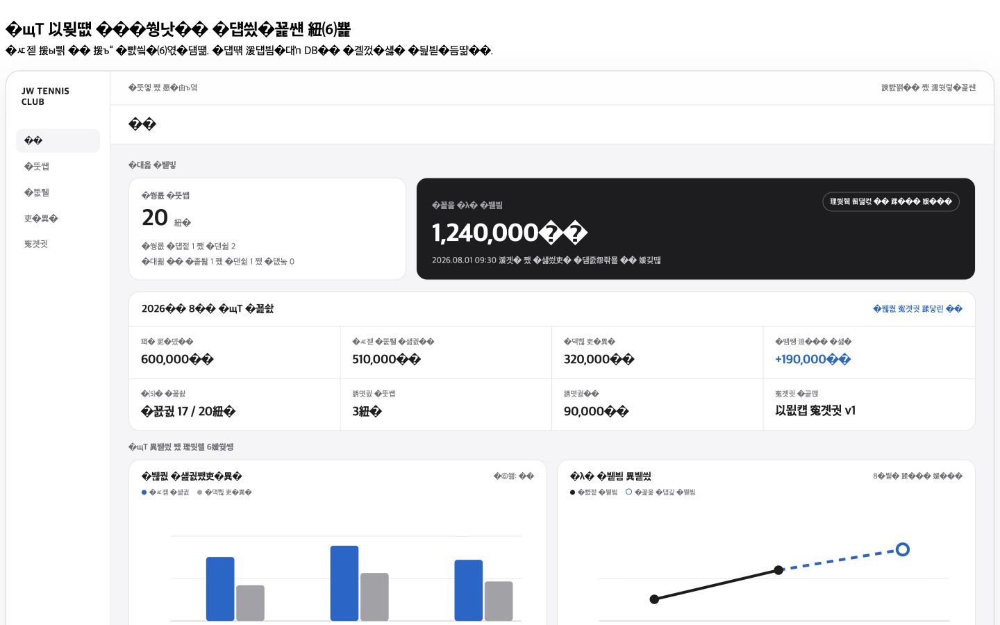
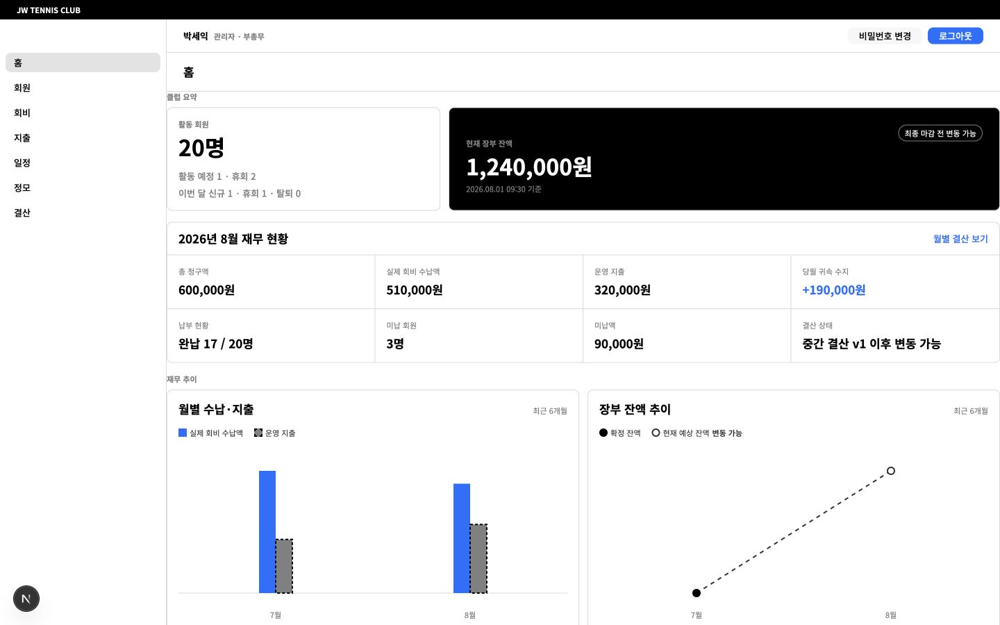
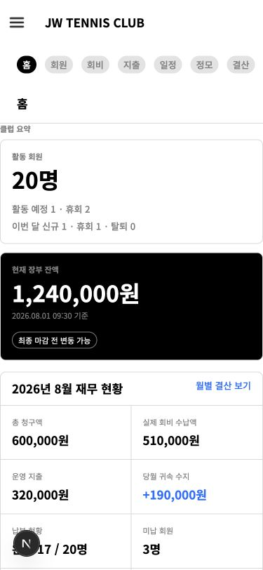

Financial dashboard — approved reference vs implementation
Reference · 1440 × 900 · available/provisional

Implementation · 1440 × 900 · available/provisional

Reference · 375 × 812 · available/provisional
Implementation · 375 × 812 · available/provisional
